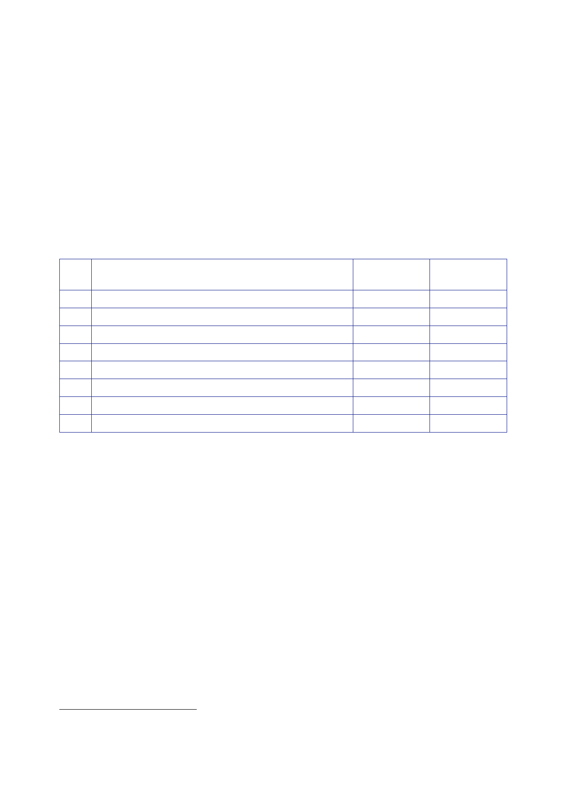

The Report
of the Iraq Inquiry
203.
IBC
published A Dossier of
Civilian Casualties 2003 – 2005 in July
2005.128
The dossier
stated that 24,865 civilians had been reported killed in the two
years from
20 March
2003 to 19 March 2005, almost all of them as a direct result of
violence.
204.
Of the 13,811
fatalities for which IBC had age and gender
information,
11,281 (81.7 percent)
had been male (including the elderly) and 1,198 (8.7 percent)
had
been female
(including the elderly). A total of 1,281 (9.3 percent) had been
children and
51 (0.4
percent) babies.
205.
The dossier
also provided a breakdown of who had killed those
civilians.
That breakdown
is reproduced in the table below.
Killers by
category
Number
killed
Percentage
of
total
1
US‑led
forces alone
2
Anti‑occupation forces alone
3 Both
US‑led and anti‑occupation forces involved
4 Iraqi
MOH‑defined “military actions”
5 Iraqi
MOH‑defined “terrorist attacks”
6
Predominantly
criminal killings
7
Unknown
agents
Total
deaths
9,270
2,353
623
635
318
8,935
2,731
24,865
37.3
9.5
2.5
2.5
1.3
35.9
11.0
100.0
206.
The “unknown
agents” category included attacks which apparently targeted
only
civilians
and lacked any identifiable military objective – for instance
suicide bombs
in markets
and mosques, or attacks apparently motivated by personal or
inter‑group
vendettas.
The category also included 334 individual killings where media
reports
provided no
clear information about the killer. This category was likely to
overlap with
others.
207.
The dossier
reported that 98.5 percent of deaths caused by US‑led forces
were
attributable
to the US and 1.5 percent of deaths were attributable to other
coalition
forces
including the UK.
208.
The dossier
also stated that in incidents for which both death and injury
information
was
available, it had recorded 42,500 injuries (of all kinds) against
13,424 deaths, a ratio
of over 3
to 1.
128
Iraq Body
Count, July 2005, A Dossier
of Civilian Casualties 2003 – 2005.
206